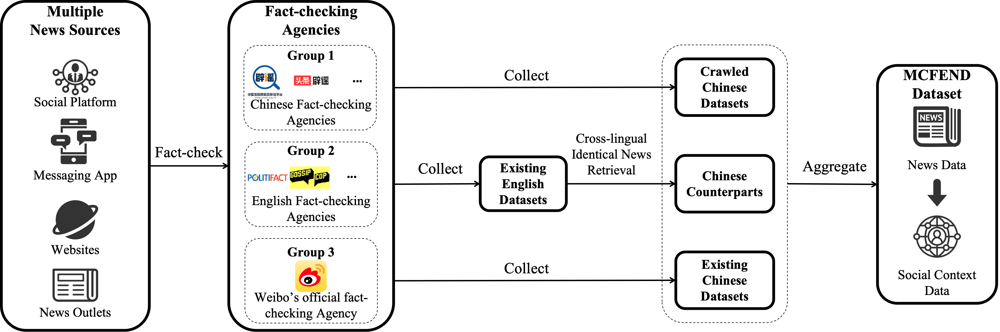
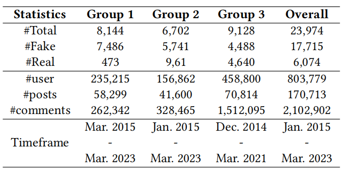

<!DOCTYPE html>
<html lang="en-US">
<head>
    <meta http-equiv="Content-Type" content="text/html; charset=UTF-8">
    <title>MCFEND: A Multi-source Benchmark Dataset for Chinese Fake News Detection</title>
    <meta name="viewport" content="width=device-width, initial-scale=1">
    <meta name="theme-color" content="#157878">
    <link rel="stylesheet" href="style.css">
</head>
<body>
    <section class="page-header">
        <h2 class="project-name">MCFEND: A Multi-source Benchmark Dataset for Chinese Fake News Detection</h2>
        <br>
        <h2 class="project-tagline">
            <center> Yupeng Li<sup>1</sup>, Haorui He<sup>1,2</sup>, Jin Bai<sup>3</sup>, Dacheng Wen<sup>1,4</sup> </center>
            <center> <sup>1</sup>Hong Kong Baptist University, Hong Kong, China </center>
            <center> <sup>2</sup>The Chinese University of Hong Kong-Shenzhen, Shenzhen, China </center> 
            <center> <sup>3</sup>Beijing Normal University-Hong Kong Baptist University United International College </center>
            <center> <sup>4</sup>The University of Hong Kong</center>
            <center> <i>This work was done while Haorui He, Jin Bai, and Dacheng Wen were under the supervision of Yupeng Li. Haorui He is the corresponding author.</i></center>
        </h2>
    </section>

    <section class="main-content">
        <h2>0. Contents</h2>
        <ol>
            <li><a href="#abstract">Abstract</a></li>
            <li><a href="#dataset-download">Dataset Download</a></li>
            <li><a href="#dataset-construction">Dataset Construction</a></li>
            <li><a href="#dataset-statistics">Dataset Statistics</a></li>
            <li><a href="#refs">Citations</a></li>
        </ol>
        <br>
        <h2 id="abstract">1. Abstract</h2>
        <p>The prevalence of fake news across various online sources has had a significant influence on the public. Existing Chinese fake news detection datasets are limited to news sourced solely from Weibo. However, fake news originating from multiple sources exhibits diversity in various aspects, including its content and social context. Methods trained on purely one single news source can hardly be applicable to real-world scenarios. Our pilot experiment demonstrates that the F1 score of the state-of-the-art method that learns from a large Chinese fake news detection dataset, Weibo-21, drops significantly from 0.943 to 0.470 when the test data is changed to multi-source news data, failing to identify more than one-third of the multi-source fake news. To address this limitation, we constructed the first multi-source benchmark dataset for Chinese fake news detection, termed MCFEND, which is composed of news we collected from diverse sources such as social platforms, messaging apps, and traditional online news outlets. Notably, such news has been fact-checked by 14 authoritative fact-checking agencies worldwide. In addition, various existing Chinese fake news detection methods are thoroughly evaluated on our proposed dataset in cross-source, multi-source, and unseen source ways. MCFEND, as a benchmark dataset, aims to advance Chinese fake news detection approaches in real-world scenarios.</p>
        <br>
        <h2 id="dataset-download">2. Dataset Download</h2>
        <p>
            <!-- Example of adding an icon using HTML Entity for a simple visual effect -->
            <a href="https://drive.google.com/drive/folders/1tflhQTkMT_gTTwEw3ESfKS7Sr5w__5u5?usp=sharing" class="button">&#128190; Download Dataset</a>
        </p>
        <br>
        <h2 id="dataset-construction">3. Dataset Construction</h2>
        
        <br>
        <h2 id="dataset-statistics">4. Dataset Statistics</h2>
        
        <br>
        <h2 id="refs">5. Citation</h2>
        <p>If you utilize this repository or dataset, please consider citing our paper:</p>
        <pre>
        @INPROCEEDINGS{mcfend,
              title={MCFEND: A Multi-source Benchmark Dataset for Chinese Fake News Detection},
              author={Li, Yupeng and He, Haorui and Bai, Jin and Wen, Dacheng},
              booktitle={Proc.~of WWW (to appear)},
              year={2024},
        }
        </pre>
        <br>
    </section>
</body>
</html>
